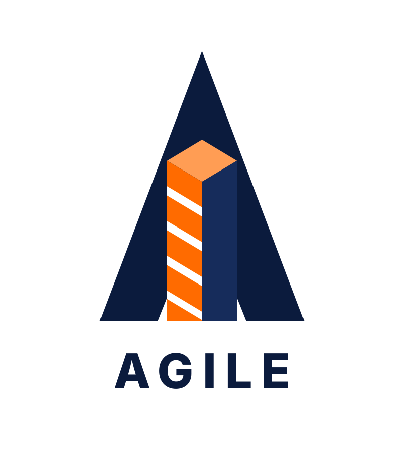
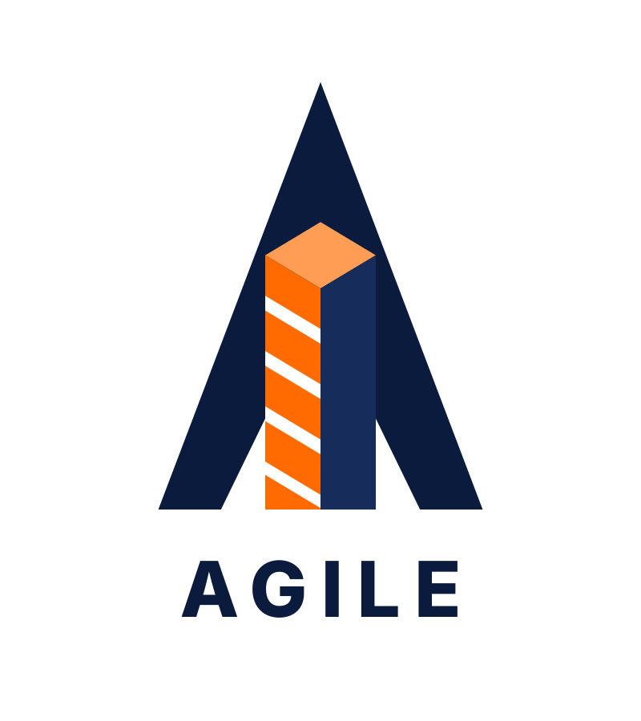

🔬 Refinamento de Geometria & Respiro
Comparativo: Abertura na Base do "A"
Compare lado a lado o respiro negativo entre os pilares estruturais da letra "A" e as paredes laterais do edifício isométrico central.
Opção A (Atual)
Folga 20px

Folga Estreita (20px)
Abertura original. Em reduções pequenas, a fresta tende a fechar, criando uma sensação de aperto na base do prédio.
| Respiro da base: | 20 px (Estreito) |
| Largura do pilar: | 125 px |
| Ângulo interno: | Fechado |
Opção B (Balanceada)
⭐ Recomendada
Folga Balanceada (45px)
Equilíbrio arquitetônico perfeito: O edifício ganha respiro e silhueta independente, mantendo a robustez e estabilidade das pernas do "A".
| Respiro da base: | 45 px (Ótimo) |
| Largura do pilar: | 100 px (Sólido) |
| Ângulo interno: | Harmônico 1:2.25 |
Opção C (Ampla)
Folga 60px

Folga Ampla (60px)
Máximo respiro e pernas mais esguias. Cria uma sensação de grande leveza e espaço aéreo amplo.
| Respiro da base: | 60 px (Muito Amplo) |
| Largura do pilar: | 85 px |
| Ângulo interno: | Aberto |
Zoom de Detalhe na Base
Observe como a Opção B resolve o estrangulamento da base preservando o peso do pilar.
Opção A: Folga 20px (Apertada)
Opção B: Folga 45px (Ideal)
Opção C: Folga 60px (Muito Aberta)